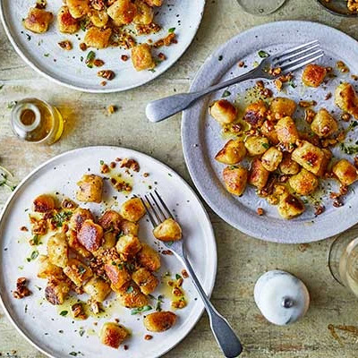

Projects
Recipes
Contact
Parsnip Gnocchi

Take parsnips to another level by turning them into gnocchi with a crunchy walnut crumb. This moreish dish is vegan, healthy and delicious.
Serves 4 | Takes 95 mins
Original recipe:
https://www.bbcgoodfood.com/recipes/parsnip-gnocchi
main
Ingredients
400g parsnip, peeled and cut into chunks
600g potatoes, peeled and cut into chunks
60ml olive oil, plus a drizzle to serve
3 unpeeled garlic cloves
1 tsp ground nutmeg (around 1 clove)
100g ‘00’ flour
2 tbsp nutritional yeast
½ small pack thyme, leaves picked, to serve
30g walnuts, toasted and chopped, to serve
Method
Heat oven to 220C/200C fan/gas 7. Toss the parsnips and potatoes in 2 tbsp of the olive oil and tip into a roasting tin along with the garlic cloves. Roast for 40 mins or until the veg is completely soft. Remove from the oven and leave to cool a little. Squeeze the garlic from their skins, then discard the skins. Tip everything into a food processor, along with the nutmeg, flour and nutritional yeast, season well, then pulse until well combined and holding together as a dough.
Bring a large pan of salted water to the boil. Tip the dough onto a floured surface, cut into four chunks and roll each into a sausage about 35cm long and 2.5cm wide. Use the back of a table knife to cut each sausage into small pillow-shaped gnocchi, each around 2cm long. Cook the gnocchi in batches for 1 min or until they float to the surface. Remove from the water with a slotted spoon and drain on kitchen paper.
In a frying pan, heat the rest of the oil over a medium heat until shimmering. Add half the gnocchi and fry until lightly golden on each side, around 3–4 mins. Transfer them to a tray using a slotted spoon while you cook the second batch. When all the gnocchi are golden, return them all to the pan to warm through before dividing between four plates. Sprinkle over some black pepper, then top with the thyme leaves, toasted walnuts and a drizzle of olive oil, if you like.